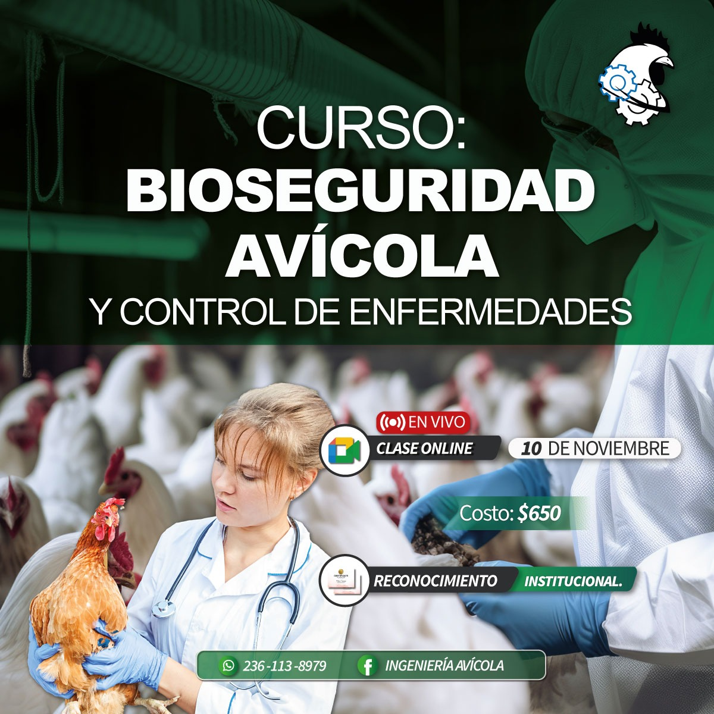
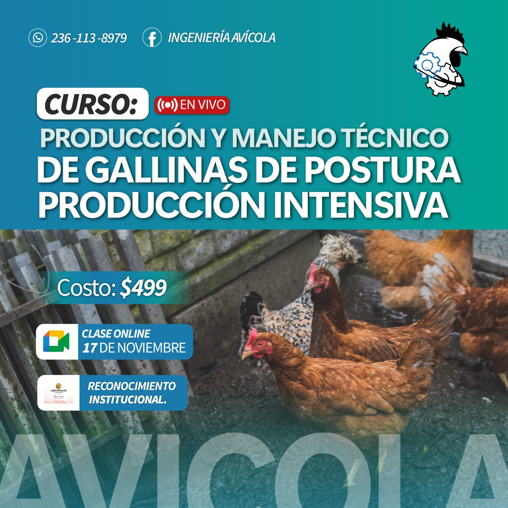
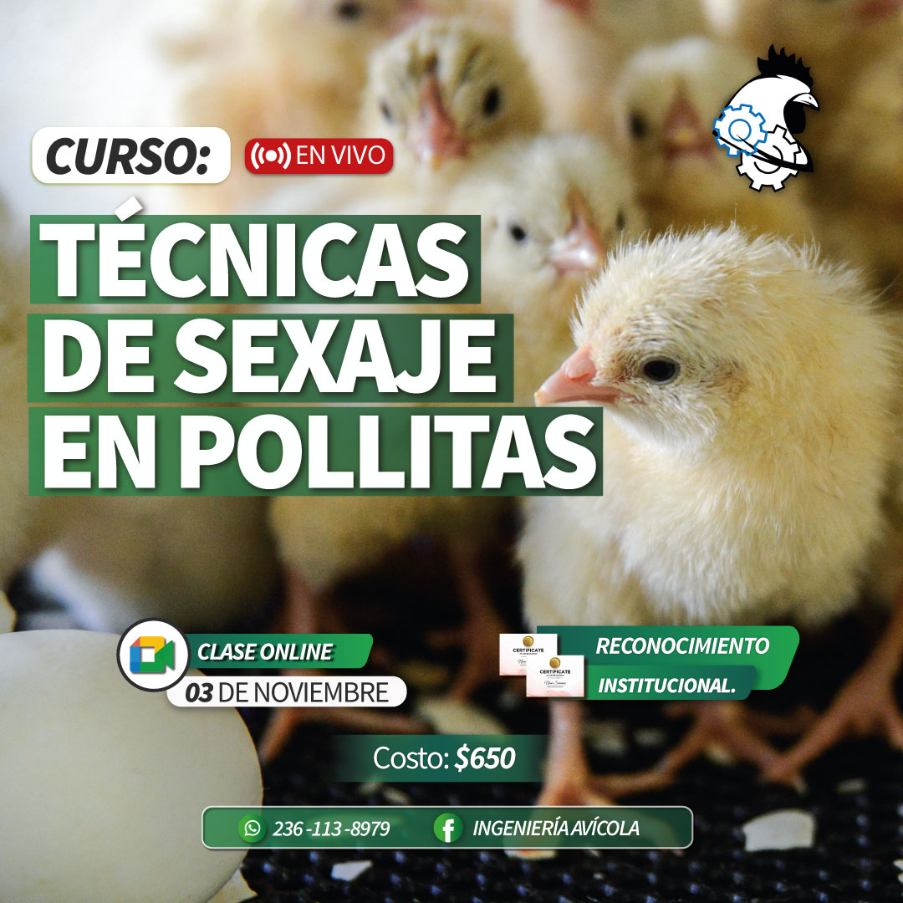
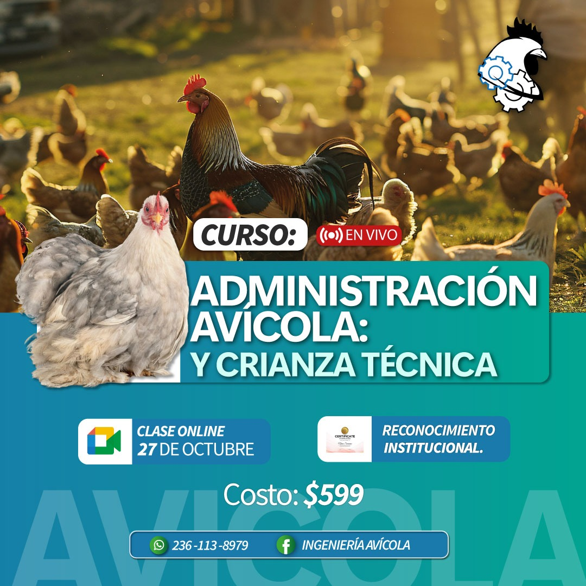
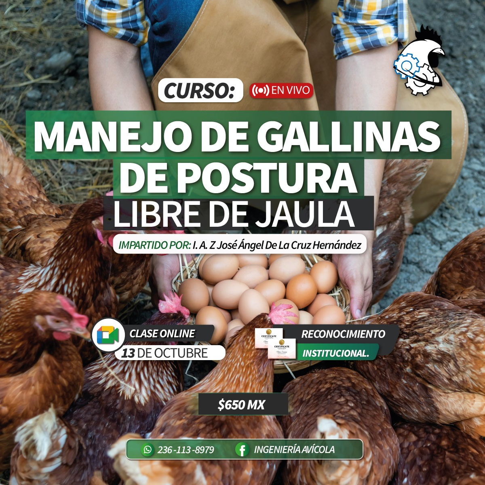
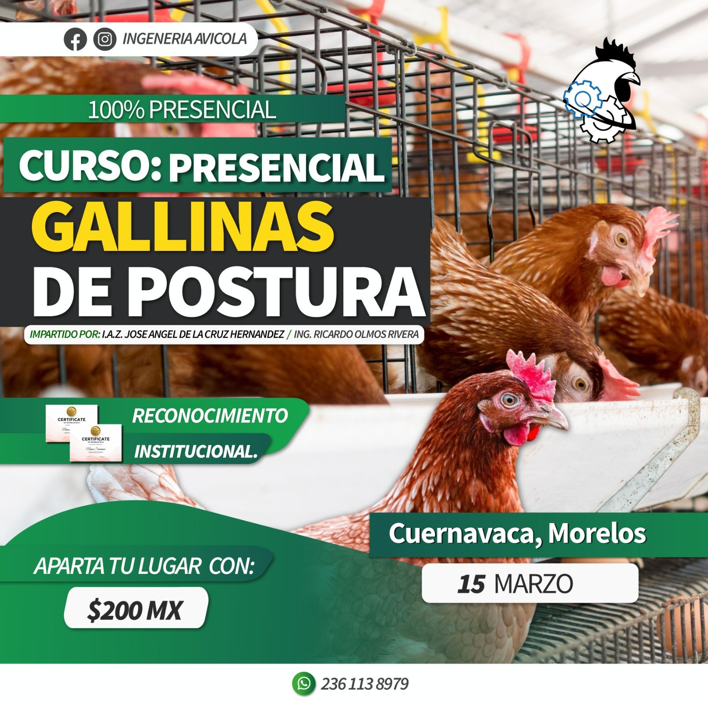

En línea
Manejo de gallinas de postura libre de jaula
Curso orientado al manejo en sistemas alternativos de producción de huevo.
 +52 236 113 8979
+52 236 113 8979 ingenieriaavicol@gmail.com
ingenieriaavicol@gmail.com Cobertura: Puebla, Veracruz, Oaxaca, Hidalgo, Morelos y Tabasco
Cobertura: Puebla, Veracruz, Oaxaca, Hidalgo, Morelos y TabascoContenido organizado para mostrar tu oferta principal y permitir que el visitante solicite informes fácilmente.

Curso orientado al manejo en sistemas alternativos de producción de huevo.

Temas para organizar y operar mejor proyectos productivos avícolas.

Aprendizaje técnico para identificación y manejo de pollitas.

Curso enfocado en producción intensiva y manejo técnico de postura.

Medidas preventivas y protocolos sanitarios para una producción más segura.

Curso presencial pensado para proyectos familiares o de pequeña escala.